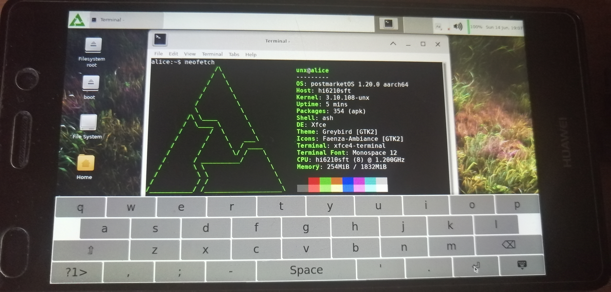

Huawei P8 Lite (huawei-alice)
|
 P8 Lite with XFCE4 | |
| Manufacturer | Huawei |
|---|---|
| Name | P8 Lite |
| Codename | huawei-alice |
| Released | 2015 |
| Category | testing |
| Original software | Android |
| Original version | 5.0.2 |
| Extended version | 6.0 |
| postmarketOS kernel | 3.10.108 |
| Hardware | |
| Chipset | HiSilicon Kirin 620 |
| CPU | Octa-core 1.2 GHz Cortex-A53 |
| GPU | Mali-450 MP4 |
| Display | 720x1280 IPS LCD |
| Storage | 16 GB |
| Memory | 2 GB |
| Architecture | aarch64 |
| Unixbench Whet/Dhry score | 2193.0 |
{kind=link}
| USB Networking |
Works
|
|---|---|
| Flashing |
Partial
|
| Touchscreen |
Works
|
| Display |
Works
|
| WiFi |
Works
|
| FDE | |
| Mainline |
Broken
|
| Battery | |
| 3D Acceleration | |
| Audio | |
| Bluetooth | |
| Camera | |
| GPS | |
| Mobile data | |
| SMS | |
| Calls | |
| USB OTG | |
| NFC | |
| Accelerometer | |
|---|---|
| Magnetometer | |
| Ambient Light | |
| Proximity | |
| Hall Effect | |
| Barometer | |
| Power Sensor | |
| Camera Flash | |
|---|---|
| Keyboard | |
| Touchpad | |
| USB-A | |
| HDMI/DP | |
| Ir TX | |
| Ir RX | |
| Stylus | |
| Haptics | |
| Ethernet | |
| FOSS bootloader | |
Users owning this device
- Bastindo (Notes: cracked screen, bootloader unlocked with PotatoNV)
- Blender Addict
- Hacker420 (Notes: Dying battery.)
- Jojo autoboy (Notes: Technically a Huawei Y6II (CAM_L21))
- Knuxfanwin8 (Notes: unlocked with PotatoNV, dead wifi/bluetooth)
- Notnoelchannel
- TPJS (Notes: untested)
- Unx (Notes: Ported)
How to enter flash mode
Fastboot - hold Power + Volume Down
Recovery - hold Power + Volume Up
Bootloader
The bootloader can be unlocked using PotatoNV. To unlock the bootloader, you will need to disassemble the device.
The back cover is attached with clips, and can be taken off with some fiddling. There's a bit of glue around the battery, but you can remove it by wedging in a plastic card. See the iFixit teardown guide for this device for more detailed instructions.
The test point for the device is located under the bottom metal shield and speaker. You will need to remove them to get to it - the shield (and the top speaker screws) are standard Philips-heads, the bottom ones are torque. See the photo at the bottom of the page. Short down the two marked points with a pair of tweezers to activate it.
Follow the guide in the PotatoNV README to unlock the bootloader. Select the Kirin 620 bootloader. Note that you need a Windows PC to run the PotatoNV software. Make sure you install the testpoint drivers.
It's also possible to unlock the bootloader without opening the device by following this bootloader unlock guide on XDA developers. Effectively, the process is just downgrading to Android 5 then rooting the device then getting the OEM unlock key that way. PotatoNV should work better, though.
Installation
Flashing rootfs may not work, use sideload.
Mainline status and components
It may be possible to mainline this device, as its SoC is supported in the mainline kernel.
| Element type | Element | Works? | Notes |
|---|---|---|---|
| Chipset | HiSilicon Kirin 620 (Hi6220) | DTS in mainline | |
| Graphics | Mali-450MP4 | Seems to have a node in the DTS? | |
| Charger | HI6521/BQ2419X | BQ24190 is supported in mainline | |
| PMIC | HI6552 | Appears to be supported in mainline | |
| Touchscreen | CYTTSP5 | Supported in mainline. | |
| USB switch | FSA9685 | Not supported in mainline | |
| NFC | NXP PN547 | Supported in mainline | |
| Audio codec | MAX98925, TFA9895 | Supported in mainline | |
| WiFi, Bluetooth | BCM4343/HI1101 | ||
| Accelerometer | ST_LIS3XH/ROHM_KX023 | Both supported in mainline (first one not exactly, but should be the same as other ST accelerometers in mainline). Second one is confirmed to be used. | |
| Proximity/light sensor | TAOS_TMD27723 | Variant of the TMD2772 which is supported in mainline | |
| Compass/magnetic | AKM09911 | Not supported in mainline | |
| Hall effect sensor | AK8789 | Not supported in mainline | |
| Primary camera | OV13850 | Mainline has support for an OV13858 | |
| Secondary camera | OV5648 (foxconn) | Supported in mainline | |
| Display | BOE NT35521 | Mainline has a driver for a similar panel in a Sony device |
There are many cameras (OV5648, IMX134, S5K4E1GA, OV13850, IMX328, OV8856, IMX219, HI843S) and displays (OTM1902B, OTM1282B, NT35521, LPM070W425C) listed in the defconfig; these were present on my device.
Getting the camera/display used on your device
$ cat /sys/k3_camera/pri_sensor && echo ""
$ cat /sys/k3_camera/sec_sensor && echo ""
$ cat /sys/class/graphics/fb0/lcd_model
Gallery

Test point location
See also
- Phone specifications
- Kernel
- pmaports!1234 Initial (closed, not merged) merge request
- pmaports!1306 Initial merge request
- Device package
- Kernel package